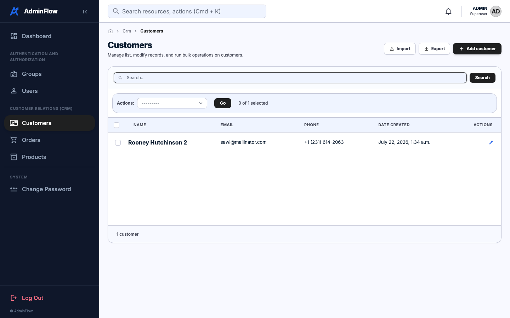
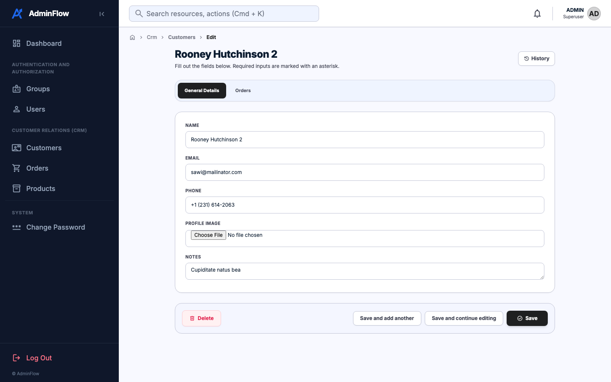

UI Features
AdminFlow replaces every default Django admin template with a polished, minimalist UI.
No extra configuration is needed — just having "adminflow" in INSTALLED_APPS is enough.
Dashboard
The dashboard shows system stats (registered models, Django version, database engine, active users) and a quick-access grid for every registered model.

Features:
System stats cards — DB engine, Django version, Python version, registered model count
Per-app model grid with Add and View shortcuts
Recent Activity sidebar
Success / error / warning toast notifications on login and actions
Model List (Changelist)

The changelist includes:
Search bar and filter button in a clean toolbar
Import and Export action buttons (when
django-import-exportis installed)Sortable column headers
Inline action icons per row (edit, view, delete)
Pagination with page size control
Model Change Form

The change form features:
Grouped fieldsets with collapsible sections
Inline related models rendered as stacked or tabular inlines
History button — links to the audit trail (when
django-simple-historyis installed)Save / Save and continue / Save and add another buttons in a sticky footer bar
Login Page

The login page is a centered card with the ADMINFLOW_TITLE displayed at the top.
Customisation Settings
Setting |
Default |
Description |
|---|---|---|
|
|
Text shown in the sidebar header and browser tab |